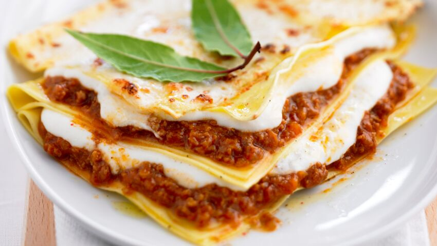

Lasagnes

Description
Recette de lasagnes bolognaise et béchamel
Ingrédients
Lasagnes bolognaise
- 1 paquet de pâtes à lasagnes
- 400g viande hachée
- 800g pulpe de tomates
- 1 gousse d'ail
- 1 oignon
- 2 cuillères à soupe de concentré de tomates
- Parmesan râpé
- 1 cube bouillon de boeuf
- Huile d'olive
- Herbes de provence
- Sel et poivre
Béchamel
- 500mL lait
- 70g farine
- 70g beurre
- Noix de muscade
- Sel et poivre
Étapes
Bolognaise
- Peler et émincer l’oignon, le faire revenir dans une sauteuse avec un filet d’huile.
- Laisser dorer, puis ajouter l’ail haché et la viande.
- Après quelques minutes, ajouter la pulpe et le concentré de tomates, le cube de bouillon émietté, les herbes, du sel et du poivre.
- Remuer et cuire doucement à couvert durant un quart d’heure, en ajoutant un peu d’eau si la sauce s’assèche.
Béchamel
- Mettre le beurre dans une casserole et le laisser fondre.
- Éteindre le feu et verser la farine.
- Remuer, puis verser le lait petit à petit, toujours en remuant.
- Assaisonner à votre convenance en noix de muscade, sel et poivre.
- Rallumer le feu à doux et poursuivre la cuisson jusqu’à ce que la sauce épaississe.
Assemblage
- Préchauffer le four à 200°C chaleur tournante.
- Verser un peu de béchamel dans le fond d'un plat pouvant aller au four.
- Déposer une couche de lasagnes, puis de bolognaise, de nouveau des lasagnes puis de la béchamel.
- Remplir le plat en terminant par une couche de lasagnes, béchamel et parmesan râpé.
- Enfourner pendant 20-30min en fonction du plat et de l'aspect.
Retour à l’accueil